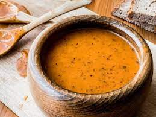

TARHANA SOUP

Description;
You have a source of healing in a Turkish soup that will warm you up on cold winter days. Today we have come together with you for Tarhana Soup recipe.
Ingredients;
- 3 tablespoons of home tarhana
- 1 tablespoon of mint
- 2 tablespoons of oil
- 1 tablespoon of tomato paste
- 6 cups of water
- Red chili pepper
- Black Pepper
- Salt
Steps;
- We add oil, mint, tomato paste, spices and tarhana into our pot and roast by stirring a little. You can also use butter if you wish.( Or you can add the tarhana after adding the water and mix it with a whisk. so that the possibility of clumping is reduced.)
- We add the water slowly and cook while stirring continuously. You can mix it with a wire whisk to avoid lumps. (Let's cook by stirring until it boils.)
- After boiling, wait for 5 more minutes and remove from the stove.
Return to HomePage